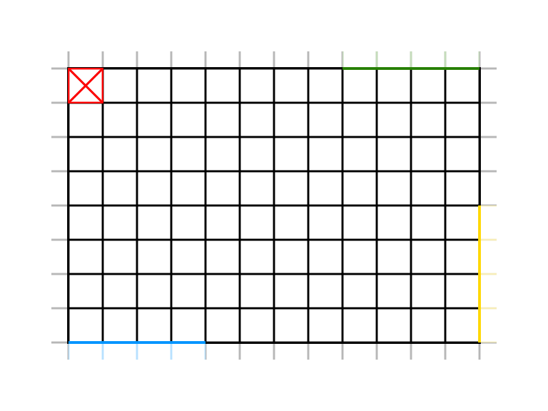

Problem Analysis
- definire meglio "location" (posizione, come casella - coordinate) e spiegare perché questa scelta.
Utile(?): glassbox [1,2,3,4] per indicare quale casella del glassbox (dare spiegazione smanettona sul perché si accumula la spazzatura in un punto ehehe) Spiegare perché origine del piano cartesiano sta in alto a sinistra
- Tecnologia per SmartDevice (Flutter)
- Formato messaggi da scambiare (JSON)
- Attesa risposta alla store_request e meccanica pickup: il truck driver come fa a sapere se sta aspettando inutilmente? Come chiarito dal committente, il waste service potrebbe star gestendo un'altra richiesta. Cosa fa lo smart device? Attende finché non riceve una risposta? Presenta un timer oltre il quale se ne va (eventualmente presso un altro waste service)? E quando riceve una loadaccepted, come fa ad attendere il termine della pickup, prima di liberare INDOOR? Inseriamo una meccanica automatica nello smart device, che quando riceve una load accepted aspetta TOT secondi della pickup, poi si disconnette? Avrebbe senso.
- Rappresentazione della service area (Coordinate cartesiane in TT, e enum in WasteService)
Software Provided by the Customer
- BasicRobot - software component which executes movement commands of a DDR-robot "independently of the technology" with which the robot is implemented (virtual or real);
- RaspberryPi utility software -
Core-Business Software
Smart Device
Solution:
Reasons:
- Google framework released recently (end of 2018) and with a great active support.
- Based on Dart language (also developed by Google), an object-oriented language with a syntax much similiar to Java.
- Simple to use and learn, since the documentation is full of examples and tutorials, which makes it easier to develop prototypes and production applications, and it's becoming more and more popular lately.
- Material design: everything is a Widget, which make it perfect when it comes to apply OOP principles and design patterns.
- Cross-platform: it allows to write one codebase and build it for many platforms (web, desktop, mobile).
- Hot reload allows to see changes directly while using the application, without having to rebuild it entirely.
- Extremely handy: we can show off a more practical demo to the customer, since we can give him an application that he can install and try directly on his smartphone.
Waste Service
The customer requirements don't specify priority rules regarding the truck requrests, therefore, they'll be served in order of arrival. We decide to send aload_rejected even if the store_request
contains a invalid data:
- Not properly formatted according to the JSON object.
- Negative or too big WasteLoad.
- WasteType not present in the Service Area.
Service Area
Problem: we need a proper representation of the service area to optimally move and monitor the transport trolley.Solution:
Reasons:
- Since the HOME is the top-left corner, it's more intuitive to represent it as the first element of the matrix, which is the [0,0] element.
- We can associate a cartesian coordinate system to the matrix with the origin in the top-left corner and RD as unit. That might make things easier later on, if we will need to implement a graphical representation of the transport trolley state (for example in WasteServiceStatusGUI). This because almost every software, library, framework or API, start drawing from the top-left corner to the bottom-right one.



Show the legend
Show the coordinate system
Relevant Positions
The matrix number of rows and columns depend on RD (which is the size of the DDR robot), therefore for the moment we assume to have an M x N matrix, i.e. with respectively M rows (x axis) and N columns (y axis).
The relevant positions are:
- [0,0] =
HOME - from [0,M] to [4,M] =
INDOOR - from [N,0] to [N,4] =
GLASSBOX - from [N,M-4] to [N,M] =
PLASTICBOX
Transport Trolley
We assume that the deposit action cannot fail and the trolley cannot be stopped, for the moment. However, since we know in the next sprint we'll implement the stop/resume mechanics, we decide to model the interaction in an asynchronous way.
DDR Robot
WEnv -> Virtual Enviromnent fornito dal committente, spieghiamo perché usiamo questoInteractions
Smart Device ↔ Waste Service
- SmartDevice sends a
store_requestto the WasteService - SmartDevice waits for a reply
- WasteService sends a
store_reply.
Il waste service
Waste Service ↔ Transport Trolley
Transport Trolley ↔ DDR Robot
Test Plan
Forse è meglio metterli in una sezione a partePer lo smart device simulator usare il testing dei widget (ma forse non serve, visto che deve semplicemente simulare l'invio di richieste)